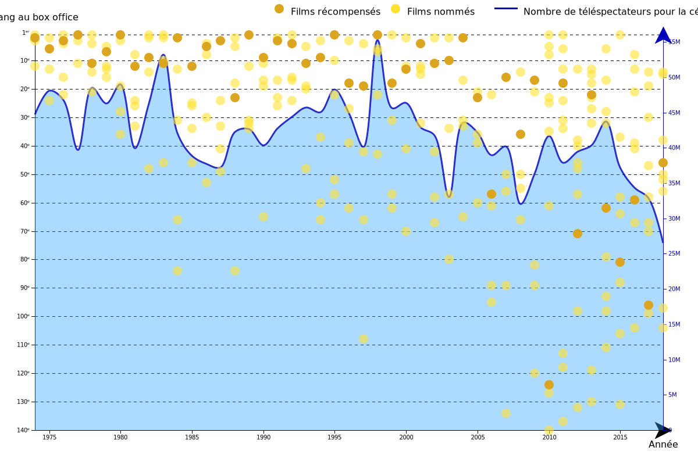
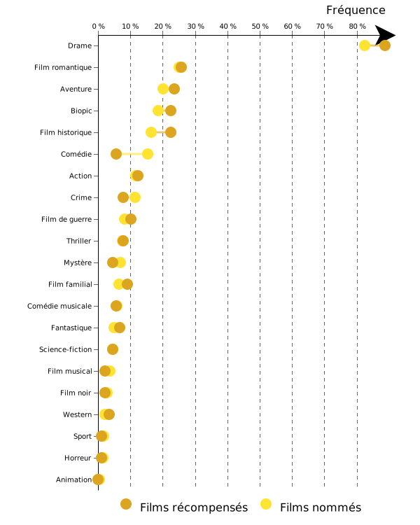
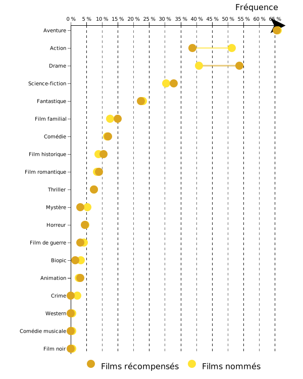

Des Oscars de moins en moins populaires
Voici l'ensemble des films nommés et récompensés pour l'Oscar du meilleur film depuis 1940. La hauteur de chaque disque correspond au rang du film au box office : plus il est haut, plus le film a été populaire.
Jusqu'au milieu des années 2000, les films récompensés avaient généralement les faveurs du public. Le prix était même assez souvent remis au film le plus populaire de l'année : Autant en emporte le vent (1940), Le pont de la rivière Kwaï (1957), Ben-Hur (1959), La mélodie du bonheur (1965), Le parrain (1972), Rocky (1976), Rain Man (1988), Forrest Gump (1994) et Titanic (1998) ont tous remporté la statuette. Le retour du roi (2004), troisième volet de la saga du Seigneur des Anneaux, est cependant le dernier film du top 15 à se voir attribuer le prix.
En 2009, The Dark Knight et Wall-E, pourtant très bien reçus par la critique, sont "snobés" par l'Académie et ne sont même pas nommés. Pour éviter que cela se reproduise, le nombre de films nommés dans la catégorie passe de 5 à 10.
Des films comme Avatar, Là-haut, Toy Story 3, Inception, Gravity et American Sniper, gros succès au box office, sont ainsi nommés les années suivantes. Mais aucun ne reçoit la statuette, décernée à des films bien plus discrets en salles : Démineurs, récompensé en 2010, avait engrangé moins de 20 millions de dollars l'année de sa sortie.
En observant la courbe des audiences de la cérémonie des Oscars depuis 1974, on remarque que les années avec les plus fortes audiences correspondent également aux années où des films très populaires étaient nommés.
Quelques exemples... 1983 avec E.T., sélectionné dans neuf catégories, 1995 avec Forrest Gump, nommé dans 13 catégories, et bien sûr 1998 et son record d'audience pour Titanic et ses 14 nominations : 55 millions de téléspectateurs.
Depuis cette date, les audiences ne cessent de chuter, malgré des pics ponctuels en 2004 (pour Le retour du roi), en 2010 (pour Avatar) et en 2014, où Gravity était nommé dans 10 catégories et où il était question d'un Oscar pour Leonardo DiCaprio dans Le loup de Wall Street.
Oscar du meilleur réalisateur
Traditionnellement, les Oscars du meilleur film et du meilleur réalisateur récompensent très souvent la même oeuvre : depuis 1940, ils n'ont différé que 18 fois. L'une de ces exceptions est le sacre en 2006 d'Alfonso Cuarón, qui salue la virtuosité technique de son Gravity, l'un des films les plus populaires de l'année précédente et par ailleurs le seul film de science-fiction à recevoir l'Oscar du meilleur réalisateur.
Oscar de la meilleure photographie

L'Oscar de la meilleure photographie semble bien plus élitiste que les autres catégories. A partir des années 1980, avec l'explosion du nombre de films sortant chaque année, les films sélectionnés se veulent plus éclectiques.
Parmi les nommés se trouvent beaucoup de films étrangers, comme Le fabuleux destin d'Amélie Poulain (2002) ou le film chinois d'arts martiaux Le secret des poignards volants (2005), ou encore le drame suédois Fanny et Alexandre (1984) et le conte fantastique espagnol Le labyrinthe de Pan (2007), qui remportent tous les deux le prix.
Quelques précisions...
De 1940 à 1967, deux récompenses sont remises chaque année, pour la meilleure photographie en couleur et en noir et blanc.
Mudbound, nommé en 2018, n'est pas indiqué sur ce graphique, dans la mesure où le film n'a été distribué que sur Netflix. C'est également le cas cette année de La Ballade de Buster Scruggs des frères Coen, nommé pour l'Oscar du meilleur scénario adapté, ainsi que de Roma d'Alfonso Cuarón, nommé dans dix catégories — record absolu pour un film Netflix.
Oscar des meilleurs effets spéciaux et visuels

Les films à effets spéciaux ont généralement des budgets importants et fonctionnent très bien en salles.
Les années 1960 sont dominées par des péplums tels Ben-Hur (1959) et Cléopâtre (1964), des films historiques comme Le jour le plus long (1963) et Tora! Tora! Tora! (1971), et des œuvres encore plus novatrices sur le plan technique, comme Mary Poppins (1965) et 2001, l'odyssée de l'espace (1969).
Les années 1980 et 1990 voient le triomphe d'Industrial Light & Magic, avec les films de Steven Spielberg (Les aventuriers de l'arche perdue en 1982, E.T. en 1983, Jurassic Park en 1994...), de Robert Zemeckis (Forrest Gump en 1995) et James Cameron (Terminator 2 en 1992 et Titanic en 1998). C'est également le sacre de la trilogie originale Star Wars, dont chacun des films remporte le prix, parfois sans aucune concurrence comme en 1981 et 1984.
Si Peter Jackson domine les années 2000 avec les trois films du Seigneur des Anneaux et King Kong (2006), le prix semble devenir plus élitiste ces dix dernières années.
Avatar remporte bien le prix en 2010, mais aucun des films Marvel et Star Wars nommés n'est récompensé.
L'Oscar est plutôt remis à des films techniquement méritants mais mal accueillis par le public (A la croisée des mondes en 2008, Hugo Cabret en 2012), ou bien des œuvres avec une démarche d'auteur comme L'odyssée de Pi (2013), Blade Runner 2049 (2018), et surtoutEx Machina (2016), film le moins populaire à avoir reçu le prix.
Quelques précisions...
Les effets spéciaux sont les effets réalisés au tournage (explosions, coups de feu, pyrotechnie...), tandis que le terme d'effets visuels désigne les effets réalisés en post-production (notamment fonds verts et images de synthèse).
De 1973 à 1977, puis en 1979, 1981, 1984 et 1991, un Oscar d'honneur est remis à un ou deux films sans vote.
Les données sont issues de l'Internet Movie Database (IMDb).
Seuls sont indiqués les films pour lesquels le box office est connu. Les chiffres correspondent au box office sur le territoire américain, et sont ajustés pour l'inflation (à partir de l'indice des prix du Bureau du Travail américain).
Action et aventure, pas le genre des Oscars
Pourquoi cet écart grandissant entre les films nommés et récompensés aux Oscars et les films attirant le plus de spectateurs dans les salles ? La réponse tient peut-être à l'évolution des goûts du public en matière de cinéma.
En analysant les genres des films sélectionnés par l'Académie et des films les plus populaires de chaque année, on observe une disparité croissante. Si les genres plébiscités par l'Académie sont restés relativement stables au cours du temps, le public et l'industrie privilégient de plus en plus les films d'aventure et d'action, peu au goût des Oscars.
Depuis le début des années 2000 en particulier, le nombre de films de super-héros a explosé, plaçant ces superproductions au sommet du box-office chaque année ou presque. Ce virage vers un cinéma de divertissement "pop-corn" se fait au détriment des drames et films romantiques qui avaient autrefois les faveurs à la fois du public et de l'Académie, à l'image de Titanic qui s'inscrit dans ces deux genres.
Voici l'évolution de la proportion de drames parmi les films nommés aux Oscars depuis 1940 (jaune) et parmi les films occupant les vingt premières place du box office chaque année précédant les Oscars. A noter que "drame" est une dénomination très large, regroupant des films aussi divers que La La Land, Django Unchained ou Interstellar.
L'écart avec le public ne cesse donc de se creuser depuis les années 1980 : en 1975, 70 % des films du box office (soit 14 films sur 20) étaient des drames ; en 2017, cette proportion n'est plus que de 15 % (soit 3 films), et ce malgré un pic au milieu des années 1990 avec les succès populaires de Bodyguard (avec Whitney Houston) en 1992, Madame Doubtfire en 1993 et Forrest Gump en 1994.
Films romantiques
L'amour est-il mort ? C'est en tout cas ce que l'on pourrait croire en observant l'évolution de la popularité des films romantiques.
Si dans les années 1940 et 1950 les romances représentaient régulièrement près de la moitié des films du box office, cette proportion ne cesse de chuter depuis 1978 et le carton populaire Grease, si bien qu'en 2016 et en 2017 aucun film romantique ne faisait partie des vingt films les plus vus en salle.
2018 marque une résurgence relative du genre, avec les succès en salles de A Star is Born et Crazy Rich Asians.
Films d'action
Depuis les années 1980, le public semble de plus en plus friand d'action, alors que ce genre n'a jamais vraiment été apprécié des Oscars.
Les films d'action représentaient un quart des films du box office en 1977, année de sortie du premier Star Wars ; en 2018, c'est près de 60 % des films populaires qui s'apparentent à ce genre, dont une majorité de films de super-héros : Black Panther, Avengers: Infinity War, Deadpool 2...
Films d'aventure
La même tendance se retrouve avec les films d'aventure, de plus en plus populaires depuis les années 1990 : en 1989, année de sortie d'Indiana Jones et la dernière croisade et de Retour vers le futur 2, 20 % des films du box office (soit 4 films) étaient des films d'aventure ; en 2016, cette proportion est montée à 80 % (16 films), pour la plupart des films de super-héros : Captain America: Civil War, Batman v Superman...
Les Oscars semble cependant s'ouvrir davantage aux films d'aventure depuis les années 2000, une ouverture relative puisque que ces derniers ne sont souvent nommés que pour l'Oscar des meilleurs effets visuels, qu'ils remportent rarement.
Les données sont issues de l'Internet Movie Database (IMDb).
A chaque film sont associés entre un et trois genres : le total est donc supérieur à 100 %.
Les fréquences pour les Oscars correspondent aux films nommés dans les six catégories suivantes : Meilleur film, Meilleure réalisation, Meilleure photographie, Meilleurs effets spéciaux ou visuels et Meilleur scénario original et adapté.
Les fréquences pour le box office correspondent aux vingt films les plus populaires l'année précédente.
Les comédies peu récompensées
Le problème des Oscars ne serait donc pas tant leur élitisme que leur volonté de ne pas épouser les évolutions récentes des goûts des spectateurs. Depuis toujours, les Oscars ont tendance à privilégier certains genres au détriment d'autres : les drames et les films romantiques sont particulièrement appréciés, comme nous l'avons vu, de même que les films biographiques (ou biopics).
Les films dits de genre sont quant à eux sous-représentés. Aucun film d'horreur ou de science-fiction n'a jamais remporté l'Oscar du meilleur film, et seulement un film fantastique : La forme de l'eau de Guillermo del Toro en 2018 — bien que Le retour du roi (Oscar du meilleur film 2004) soit un film fantastique, il n'apparaît pas comme tel sur IMDb.
Ces tendances sont exacerbées quand on s'intéresse uniquement aux films ayant remporté l'Oscar. Les comédies, en particulier, sont assez souvent nommées mais peu récompensées.
Chaque point sur ce graphique représente, pour un genre donné, la fréquence de films nommés pour l'Oscar du meilleur film, et la fréquence de films récompensés.
Drame, film romantique et biopic, sans surprise, arrivent en tête des genres les plus nommés et récompensés. Les comédies sont autant nommées que les biopics, mais seules 16 % d'entre elles reçoivent une statuette. A l'inverse, les films de guerre ne constituent que 7 % des nominations, mais sont récompensés dans plus d'un tiers des cas.
Oscar du meilleur réalisateur
Comme pour l'Oscar du meilleur film, drame, film romantique et biopic sont le trio de tête des genres les plus récompensés par l'Oscar du meilleur réalisateur. Les comédies sont une nouvelle fois désavantagées, puisque bien qu'elles représentent 21 % des nominations, elles ne constituent que 17 % des films à recevoir une statuette. Les films de guerre sont encore une fois sur-représentés parmi les films récompensés, puisque près de la moitié des 27 films nommés se sont vu remettre le prix.
Oscar de la meilleure photographie
L'Oscar de la meilleure photographie est plus éclectique. Le drame reste le genre prédominant, mais les films romantiques, les films d'aventure, les films historiques et les biopics représentent tous autour d'un quart des films récompensés. Encore une fois, les comédies sont nettement sous-représentées : bien qu'elles constituent 15 % des nominations, elles ne reçoivent la statuette que dans 8 % des cas.
Oscar des meilleurs effets spéciaux et visuels
Un peu de changement pour l'Oscar des meilleurs effets visuels, où les genres les plus nommés et récompensés sont les films d'aventure et d'action, les drames, les films de science-fiction et les films fantastiques. Malgré tout, l'Académie semble biaisée contre les films d'action, puisque seuls 27 % des films de ce genre nommés se sont vu remettre une statuette. A l'inverse, près de la moitié des 77 drames nommés ont reçu une statuette.
Oscar du meilleur scénario original
Drame, films romantiques et comédies dominent l'Oscar du meilleur scénario original. Néanmoins les comédies sont encore une fois sous-représentées parmi les films récompensés : bien qu'elles soient bien plus souvent nommées que les films romantiques, elles disposent du même nombre de statuettes.
Oscar du meilleur scénario adapté
Pour l'Oscar du meilleur scénario adapté, on retrouve le même trio de tête que pour les Oscars du meilleur film et de la meilleure réalisation : drames, films romantiques et biopics. Encore une fois les comédies sont désavantagées, puisqu'elles constituent 22 % des films nommés mais ne reçoivent une statuette que dans 13 % des cas. Ce biais contre les comédies se fait au profit des biopics, qui représentent un quart des films récompensés, et des films historiques pour lesquels 38 % des nommés ont remporté le prix.
Les données sont issues de l'Internet Movie Database (IMDb).
A chaque film sont associés entre un et trois genres : le total est donc supérieur à 100 %.
Voici l'ensemble des films nommés pour l'Oscar du meilleur film depuis 1940. La hauteur de chaque disque correspond au rang du film au box office : plus il est haut, plus le film a été populaire.
Et voici parmi les films nommés ceux qui ont reçu l'Oscar
Oscar du meilleur film
Jusqu'au milieu des années 2000, les films récompensés avaient généralement les faveurs du public. Le prix était même assez souvent remis au film le plus populaire de l'année : Autant en emporte le vent, Le pont de la rivière Kwaï, Ben-Hur, La mélodie du bonheur, Le parrain, Rocky, Rain Man, Forrest Gump et Titanic ont tous remporté la statuette. Le retour du roi, troisième volet de la saga du Seigneur des Anneaux, est cependant le dernier film du top 15 à se voir attribuer le prix.
En 2009, The Dark Knight et Wall-E, pourtant très bien reçus par la critique, sont "snobés" par l'Académie et ne sont même pas nommés. Pour éviter que cela se reproduise, le nombre de films nommés dans la catégorie passe de 5 à 10.
Des films comme Avatar, Là-haut, Toy Story 3, Inception, Gravity et American Sniper, gros succès au box office, sont ainsi nommés les années suivantes. Mais aucun ne reçoit la statuette, décernée à des films bien plus discrets en salles : Démineurs, récompensé en 2010, avait engrangé moins de 20 millions de dollars l'année de sa sortie.
En observant la courbe des audiences de la cérémonie des Oscars depuis 1974, on remarque que les années avec les plus fortes audiences correspondent également aux années où des films très populaires étaient nommés.
Quelques exemples... 1983 avec E.T., sélectionné dans neuf catégories, 1995 avec Forrest Gump, nommé dans 13 catégories, et bien sûr 1998 et son record d'audience pour Titanic et ses 14 nominations : 55 millions de téléspectateurs.
Depuis cette date, les audiences ne cessent de chuter, malgré des pics ponctuels en 2004 (pour Le retour du roi), en 2010 (pour Avatar) et en 2014, où Gravity était nommé dans 10 catégories et où il était question d'un Oscar pour Leonardo DiCaprio dans Le loup de Wall Street.
Oscar du meilleur réalisateur
Traditionnellement, les Oscars du meilleur film et du meilleur réalisateur récompensent très souvent la même oeuvre : depuis 1940, ils n'ont différé que 18 fois. L'une de ces exceptions est le sacre en 2006 d'Alfonso Cuarón, qui salue la virtuosité technique de son Gravity, l'un des films les plus populaires de l'année précédente et par ailleurs le seul film de science-fiction à recevoir l'Oscar du meilleur réalisateur.
Oscar de la meilleure photographie
L'Oscar de la meilleure photographie semble bien plus élitiste que les autres catégories. A partir des années 1980, avec l'explosion du nombre de films sortant chaque année, les films sélectionnés se veulent plus éclectiques.
Parmi les nommés se trouvent beaucoup de films étrangers, comme Le fabuleux destin d'Amélie Poulain ou le film chinois d'arts martiaux Le secret des poignards volants, ou encore le drame suédois Fanny et Alexandre et le conte fantastique espagnol Le labyrinthe de Pan, qui remportent tous les deux le prix.
Quelques précisions...
De 1940 à 1967, deux récompenses sont remises chaque année, pour la meilleure photographie en couleur et en noir et blanc.
Mudbound, nommé en 2018, n'est pas indiqué sur ce graphique, dans la mesure où le film n'a été distribué que sur Netflix. C'est également le cas cette année de La Ballade de Buster Scruggs des frères Coen, nommé pour l'Oscar du meilleur scénario adapté, ainsi que de Roma d'Alfonso Cuarón, nommé dans dix catégories — record absolu pour un film Netflix.
Oscar des meilleurs effets spéciaux et visuels
Les films à effets spéciaux ont généralement des budgets importants et fonctionnent très bien en salles.
Les années 1960 sont dominées par des péplums tels Ben-Hur et Cléopâtre, des films historiques comme Le jour le plus long et Tora! Tora! Tora!, et des œuvres encore plus novatrices sur le plan technique, comme Mary Poppins et 2001, l'odyssée de l'espace.
Les années 1980 et 1990 voient le triomphe d'Industrial Light & Magic, avec les films de Steven Spielberg (Les aventuriers de l'arche perdue, E.T., Jurassic Park...), de Robert Zemeckis (Forrest Gump) et James Cameron (Terminator 2 et Titanic). C'est également le sacre de la trilogie originale Star Wars, dont chacun des films remporte le prix, parfois sans aucune concurrence comme en 1981 et 1984.
Si Peter Jackson domine les années 2000 avec les trois films du Seigneur des Anneaux et King Kong, le prix semble devenir plus élitiste ces dix dernières années.
Avatar remporte bien le prix en 2010, mais aucun des films Marvel et Star Wars nommés n'est récompensé.
L'Oscar est plutôt remis à des films techniquement méritants mais mal accueillis par le public (A la croisée des mondes, Hugo Cabret), ou bien des œuvres avec une démarche d'auteur comme L'odyssée de Pi, Blade Runner 2049, et surtout Ex Machina, film le moins populaire à avoir reçu le prix.
Quelques précisions...
Les effets spéciaux sont les effets réalisés au tournage (explosions, coups de feu, pyrotechnie...), tandis que le terme d'effets visuels désigne les effets réalisés en post-production (notamment fonds verts et images de synthèse).
De 1973 à 1977, puis en 1979, 1981, 1984 et 1991, un Oscar d'honneur est remis à un ou deux films sans vote.